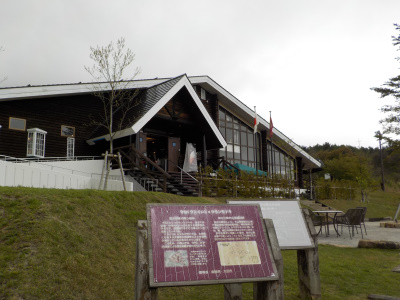
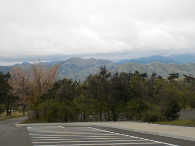
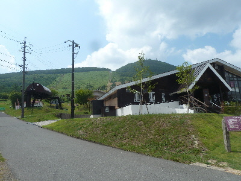
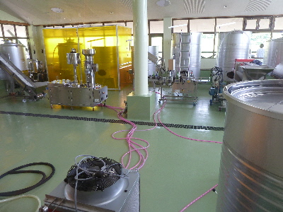

石見ワイナリーで休憩しました。
2019/05/01
石見ワイナリーって休憩するのに丁度いいです。

お土産買えるし、ソフトクリームも食べれます。
三瓶には他にも施設があるんですが、入館するとか食事しないと居づらい感じがするので、ここが出来てよかったって思っています。
美味しいワインはちょっと高価なのでなかなか買えないです。いつか買えるといいな。

島根県大田市志学ロ1640-2
2019/05/01
石見ワイナリーって休憩するのに丁度いいです。

お土産買えるし、ソフトクリームも食べれます。
三瓶には他にも施設があるんですが、入館するとか食事しないと居づらい感じがするので、ここが出来てよかったって思っています。
美味しいワインはちょっと高価なのでなかなか買えないです。いつか買えるといいな。

2018/08/11
見学といっても、山の日でイベントをやっていたので見に行っただけです。
お客さん多かったです。

建物はリフト乗り場の隣です。
昔スキー場があったころに入ったと思うんですが、全然感じが変わっていました。
綺麗でお洒落になってます。

窓越しに工場が見れます。こっちも新しくてこっても綺麗でした。
今日はあまり時間がなかったので食べませんでしたが、かき氷が美味しそうでした。ちょっと高いけど食べたいって思いました。
ワインとおつまみも販売していましたが、フルーツのグラッセや中国地方のお土産品も販売していました。
観光気分で気軽に寄れるお店でした。